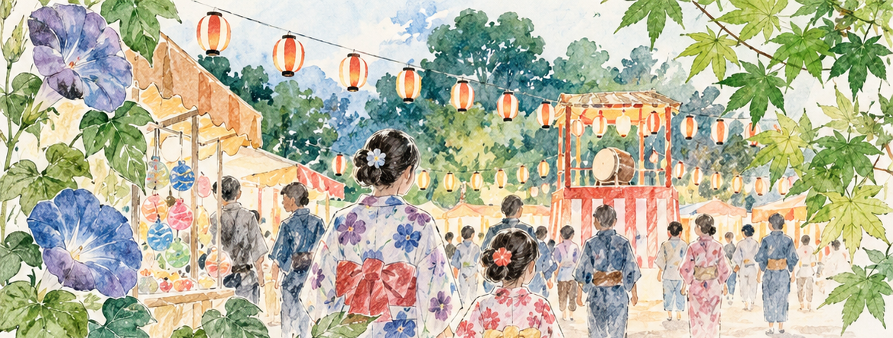
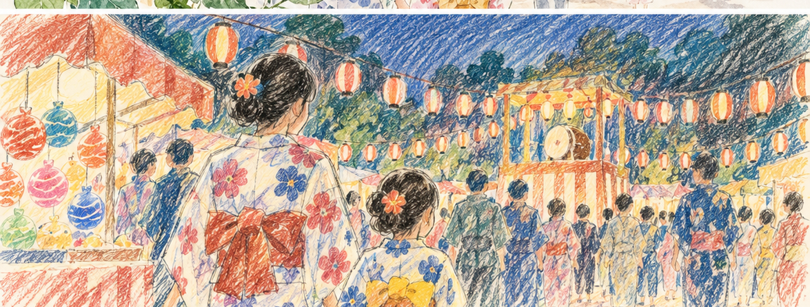
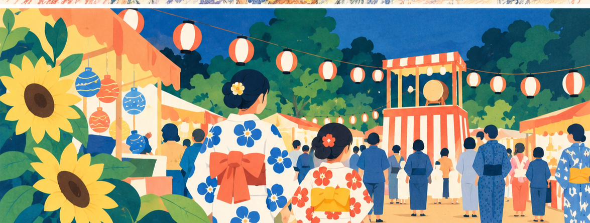
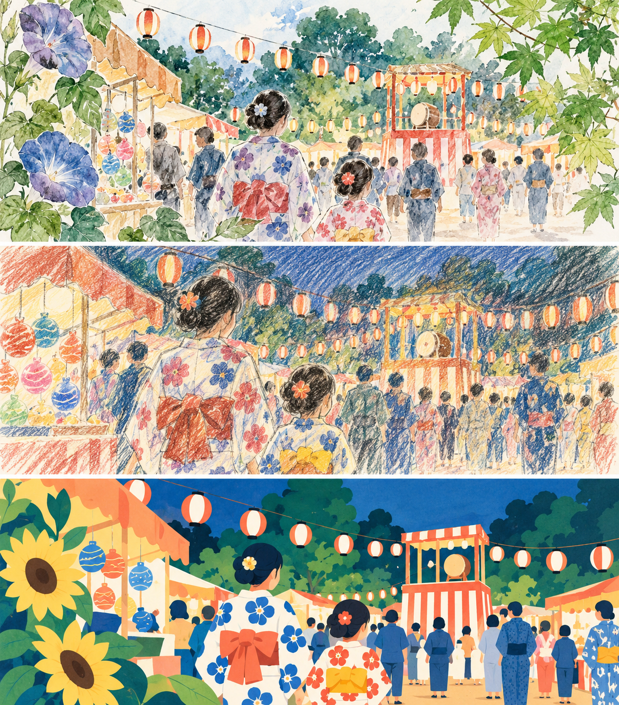

ChatGPTは文章を作るだけでなく、画像を作ることにも使えます。
「画像生成」と聞くと難しそうに感じるかもしれませんが、最初は特別な専門用語を覚える必要はありません。
明るい自然光が入る小さな仕事部屋。木の机の上にノートPCとノートがある。白を基調にした、清潔感のある写真風の画像にしてください。
のように、作りたい画像を普通の言葉で説明するところから始められます。
ChatGPTで画像を作る基本
画像を作りたいときは、
○○の画像を作ってください。
と頼みます。さらに「何を写したいか」「どんな場所か」「雰囲気」「写真風かイラスト風か」「横長か縦長か」を加えると伝わりやすくなります。
例
小さな個人事業の仕事机を描いてください。ノートPC、ノート、ペンがあります。明るい自然光で、白と淡い木目を基調にしてください。実写の写真のような雰囲気で、横長16:9にしてください。画像内に文字やロゴは入れないでください。
一回で完成しなくてもいい
生成された画像を見て、
もう少し明るくしてください。
背景をシンプルにしてください。
人物を入れないでください。
と追加できます。文章と同じように、画像も会話しながら近づけていけます。
サイズや向きを伝える
Web記事のHero画像に使いたいので16:9の横長にしてください。
SNS投稿用なので正方形にしてください。
のように用途を伝えると便利です。
入れたくないものも伝える
必要なら、
- 文字なし
- ロゴなし
- 透かしなし
- ロボットなし
- SF風にしない
なども指定できます。
人物を入れたら手や指を確認する
AI画像では人物の手や指、小物との接触が不自然になる場合があります。
- 指の本数
- 指の向き
- 手首
- 腕とのつながり
- ペンやスマートフォンの持ち方
などを拡大して確認します。
不自然なら、
右手だけを自然な5本指に修正してください。顔や背景、構図は変更しないでください。
のように修正範囲を限定できます。
画像の中の文字は後から入れる方法もある
ポスターやWeb画像では、背景画像だけAIで作り、文字はHTML、CSS、Canvaなどで後から入れる方法もあります。
商品写真とは分ける
実際に販売する商品の状態を伝える写真は実物写真を使います。AI生成画像は記事のイメージ、背景、説明用ビジュアルなどに向いています。
今日試してみる
ここでは、実際にChatGPTへ画像生成を頼んだときの例を見てみましょう。
今回は、地域の夏祭りをテーマにします。
内容は同じまま、絵のタッチだけを変えて、どれくらい印象が変わるか試します。
プロンプト例
地域で開かれる夏祭りの風景を描いてください。
会場には赤白のやぐら、提灯、屋台があり、浴衣を着た親子や地域の人たちが楽しんでいます。
夏らしい朝顔やひまわりなどの植物も自然に取り入れてください。
にぎやかですが、地域の小さなお祭りらしい親しみやすい雰囲気にしてください。
画像の中に文字、ロゴ、看板の読める文章は入れないでください。同じ場面・ほぼ同じ構図を保ったまま、次の3種類のタッチで作ってください。
- 植物図鑑の挿絵を思わせる、ボタニカルアートと透明水彩を組み合わせたタッチ
- 色鉛筆で描いたスケッチブックのような、少しざらつきのある手描きタッチ
- 紙を切って重ねたような、シンプルなフラットグラフィック風のタッチ
同じ「地域の夏祭り」でも、タッチを変えるだけで印象はかなり変わります。
1. ボタニカルアート＋透明水彩
植物の描写を強め、朝顔や木々を夏祭りの風景に溶け込ませた例です。
地域イベントの案内でも、一般的な「お祭りイラスト」とは少し違う、やわらかく上品な印象を作れます。

2. 色鉛筆スケッチ風
同じ夏祭りを、色鉛筆で描いたような少しラフな質感に変えた例です。
きれいに整いすぎないため、手作り感や親しみやすさを出したい地域イベントにも合わせやすくなります。

3. フラットグラフィック風
形と色をシンプルに整理した、紙を切って重ねたようなグラフィック表現です。
ポスターやWebページなど、遠くから見ても内容を分かりやすく見せたいときに使いやすい方向です。

3種類を並べて比べる

このように、最初から「きれいな画像を作って」とだけ頼むのではなく、
同じ場面で、タッチだけを3種類変えてください。
と頼むと、自分では思いつかなかった表現を比較しながら選ぶこともできます。
「ボタニカルアート」「色鉛筆」「フラットグラフィック」のように、普段あまり使わないタッチをあえて試してみるのも画像生成の面白いところです。
一度で決めず、
1番の雰囲気を残して、もう少し夜のお祭りらしくしてください。
3番の構図はそのままで、植物を少し増やしてください。
のように、気に入った案を基準にさらに修正していくこともできます。